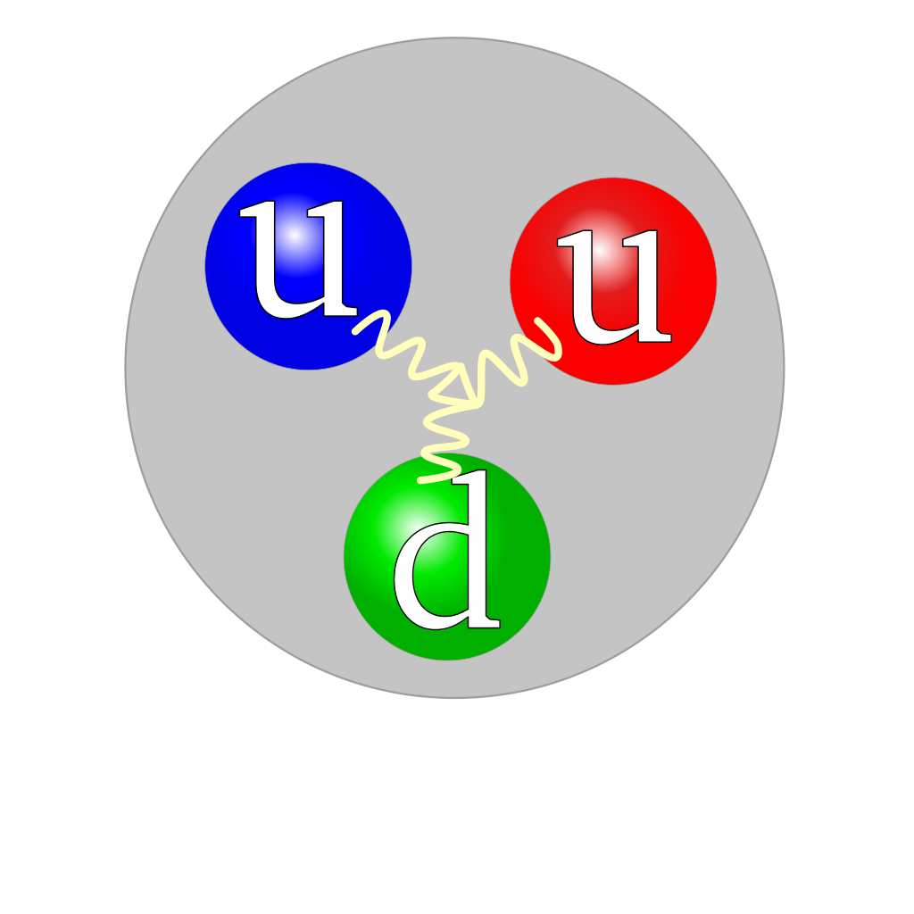

Home|Quark

Quarks are recognized today as being among the elementary particles of
which. matter is composed. The key evidence for their existence came from a
series of inelastic electron-nucleon scattering experiments conducted between
1967 and 1973 at the Stanford Linear Accelerator Center. Other theoretical and
experimental advances of the 1970s confirmed this discovery, leading to the
Standard Model of e!ementary particle physics currently in force.
The quark model was independently proposed by physicists Murray Gell-Mann and
George Zweig in 1964. Quarks were introduced as parts of an ordering scheme
for hadrons, and there was little evidence for their physical existence until
deep inelastic scattering experiments at the Stanford Linear Accelerator Center
in 1968. Accelerator experiments have provided evidence for all six flavors.
The top quark, first observed at Fermilab in 1995, was the last to be discovered.
Quarks have various intrinsic properties, including electric charge, mass, color
charge, and spin. They are the only elementary particles in the Standard Model
of particle physics to experience all four fundamental interactions, also
known as fundamental forces (electromagnetism, gravitation, strong interaction,
and weak interaction), as well as the only known particles whose electric
charges are not integer multiples of the elementary charge.